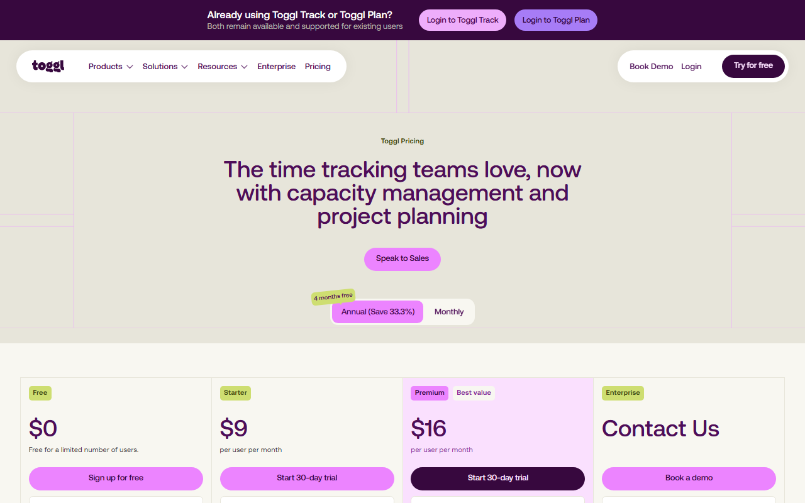

Toggl Trackは日本語で使える？スマホ版・Web版の対応範囲と設定方法
Toggl Trackは、作業時間をタイマーで記録するサービスです。個人やチームの案件別集計に使えます。モバイルアプリとWeb版では、日本語表示の対応が異なります。
この記事で扱うのは、スマホの設定方法とWeb版との違い。日本語サポートのほか、無料枠と料金も取り上げます。
Toggl Trackの日本語対応状況（モバイル・Web・サポート）
- iPhone：端末言語に応じて日本語表示
- Android：端末言語に応じて日本語表示
- Webアプリ：英語のみ／切替設定なし
- PCアプリ：日本語UIの公式記載なし
- サポート：公式窓口とヘルプは英語
スマホで時間を記録する人には向いています。Web版は必要なときだけレポートを見る使い方なら候補になります。Web管理画面も日本語で使いたい場合は、ほかのツールと比べてください。
Freeと3つの有料プラン、年払いと月払いの違いを同じ画面で見比べられます。
iPhone・Androidを日本語表示にする設定方法

モバイルアプリには、表示言語を選ぶ項目がありません。表示は端末の言語設定で決まります。モバイル版とWeb版では、日本語対応が異なります。
iPhoneで日本語表示を確認する
まず「設定」→「一般」→「言語と地域」で、iPhoneの使用言語が日本語になっているか確かめます。そのうえでToggl Trackを開き直し、メニューやボタンが日本語になったかを見ます。この操作で変わるのは端末全体の言語です。特定のアプリだけを切り替える設定ではありません。
Androidで日本語表示を確認する
Androidも、表示言語は端末側の設定で決まります。一般的な経路は「設定」→「システム」→「言語」→「アプリの言語」ですが、名称は機種やOSのバージョンで異なります。この一覧に出るのは、対応アプリだけです。ただし、Toggl Trackが表示されるかは公式情報から分かりません。端末の使用言語を日本語にしてアプリを開き直すと、表示言語を確かめられます。
スマホ版が英語のままのときに確認すること
まず端末の使用言語を見直し、アプリを更新してから再起動します。Androidでは、第2言語として日本語を追加する方法も案内されています。それでも英語のままなら、英語の公式サポートへ問い合わせてください。
Web版は日本語化できる？旧Language設定との違い
現行のWebアプリは英語のみで、Toggl公式の日本語への切替設定はありません。スマホ版を日本語で使っていても、ブラウザで開くWeb版は英語のままです。
現行Web版に日本語の言語切替はない
Web版の設定に、日本語を選べるメニューはありません。公式情報でも、Webアプリは英語のみと案内されています。
ただし、タスク名などに日本語を入力できるかは、画面表示の言語とは別の話です。UIの言語だけでは、日本語の文字列を扱えるか判断できません。
旧記事のProfile・Language設定は使わない
検索結果には、ProfileのLanguageから日本語を選ぶ手順を紹介した過去の記事が残っています。Web版では一時期、多言語表示が提供されていましたが、現在は終了しています。
古い記事どおりに操作しても、Languageは見つかりません。現在のWeb版には、日本語へ切り替える公式設定がないためです。
Chrome・Edgeの翻訳は補助手段として使う
ChromeやEdgeのページ翻訳は、Toggl Trackが提供する日本語UIではありません。動的な画面、入力欄、レポートの翻訳範囲は不明です。英語の設定名を参照できる状態で、補助的に使ってください。
英語表記の料金ページで、Freeの申し込み先と有料プランの30日間トライアルを確認できます。
タスク名・プロジェクト名・レポートで日本語は使える？
日本語UIの有無と、日本語で入力・保存・出力できるかは別の問題です。公式情報だけでは、日本語を入力・検索したときの動作は分かりません。同期や出力で文字が正しく保たれるかも不明です。
タスク名とプロジェクト名で確認する項目
公式は端末間でデータを同期する仕組みを案内しています。ただし、日本語のタスク名やプロジェクト名を入力した場合の挙動は不明です。保存や検索についても明記がありません。業務で日本語名を使うなら、Freeでサンプルを数件登録します。スマホ版とWeb版の両方で表示を確かめてください。
レポート・CSV・PDF出力で確認する項目
公式情報だけでは、レポートや出力ファイルで日本語が保たれるかは分かりません。Freeで出力できるレポートはPDFだけです。CSVとExcelは、30日間トライアルまたは有料プランで試します。
Freeプランで日本語の扱いを確認する手順
最初から有料契約しなくても試せます。Freeでは、日本語名の保存や端末間同期を試せます。レポート表示とPDF出力も対象です。CSVやExcelが必要なら、カード登録不要の30日間トライアルで自社データを使って確かめます。
日本語サポート・請求書・日本からの支払い
日本語の有人サポートやヘルプ記事は確認できません。支払い方法と請求書の取得方法は、公式に案内されています。英語UIに加えて、契約後の問い合わせ方法や経理処理も見ておきましょう。
日本語の有人サポートとヘルプは確認できない
公式ナレッジベースと問い合わせ窓口は英語です。日本語での問い合わせと回答を希望するなら、導入前にほかのツールも検討してください。
問い合わせに翻訳を使うなら、請求内容や設定名は英語表記も添えると、行き違いを減らせます。
カード・Apple Pay・Google Pay・銀行振込の条件
支払い方法は次の4つです。
- クレジットカード
- Apple Pay
- Google Pay
- 銀行振込
Apple PayとGoogle Payを使えるかどうかは、地域によって異なります。銀行振込を選べるのは年払いのみで、1年分を前払いします。
公式案内は「主要クレジットカードの多く」としており、日本発行カードやJCBの可否までは分かりません。使いたいカードブランドがあるなら、申込画面で確かめてから契約します。
PDF請求書と支払領収書を取得する方法
サブスクリプションの請求書は発行時にメールで送られます。Webアプリで「Subscription」から「History」へ進んでください。PDF請求書と支払領収書をダウンロードできます。
日本の適格請求書発行事業者番号が記載されるかは、公式案内から確認できません。税務上の扱いは、必要に応じて税理士に確認してください。
無料プランから始める方法と料金の目安
Freeは最大3ユーザーで継続利用でき、有料プランにはクレジットカード不要の30日間トライアルがあります。日本語で使える範囲を知るには、まずFreeでスマホ版とWeb版の違いを確かめます。
Freeで確認できる範囲
Freeは$0で、最大3ユーザーまで利用できます。Web・デスクトップ・モバイルで時間を記録でき、Google・Outlookカレンダーとも連携します。タスクやボードに加え、見積もりも利用可能です。
無料版でも複数の端末を使えるため、スマホは日本語、Webは英語という違いを契約前に確かめられます。Freeでは、日本語文字のPDF出力まで試せます。CSV・Excelを試すには、30日間トライアルまたは有料プランが必要です。
Starter・Premiumへ進む前に見るポイント
- Free：$0、最大3ユーザー
- Starter：1ユーザーあたり月額$9（年払い）／$12（月払い）
- Premium：1ユーザーあたり月額$16（年払い）／$24（月払い）
- Enterprise：個別見積もり
年払いの月額換算は、Starterが約1,423円、Premiumが約2,530円。1ドル=158.1円で試算した目安で、為替により変動します。有料プランはユーザー単位の課金です。チームの予算は、プラン料金に利用人数を掛けて計算してください。
英語画面でも解約できる手順を確認する
解約はWebアプリの「Subscription」から「My Plan」へ進みます。そこで「Cancel Subscription」を選んでください。解約後も現在の請求期間末までは有料機能を利用でき、原則として返金はありません。
請求期間が終わると、Freeの上限内ならFreeへ移行し、上限を超えている組織は停止状態になります。チームで使っている場合は、人数やデータがFreeの上限に収まるか、解約前に確認してください。
日本語UIが必須なら代替ツールを検討する
Web管理画面まで日本語で使いたいなら、Jibbleも比較候補に入ります。Jibbleの日本語表示はWebに対応しています。iOS・AndroidとmacOS・Windowsの各アプリも対象です。
Toggl Trackを選びやすい人
- スマホでの時間記録が中心
- Web版の英語ラベルを許容できる
- 個人または最大3ユーザーでFreeから試したい
- 英語のヘルプや問い合わせ導線でも対応できる
- 時間記録をWeb、デスクトップ、モバイルで使いたい
該当する項目が多ければ、Toggl Trackが向いています。個人や最大3ユーザーの小規模利用なら、Freeで端末ごとの表示を試せます。
代替比較へ進んだほうがよい人
管理者がWeb版を頻繁に使い、英語UIが負担になるチームは、Jibbleと比べてください。JibbleのFreeはユーザー数無制限。Webやモバイルで打刻でき、タイムシートも使えます。レポート出力にも対応しています。日本語ヘルプセンターはありますが、有人対応の言語は明記されていません。日本語UIだけで決めず、無料枠とサポートも見てください。
日本語UI以外に比べたい条件
時間管理ツールは、日本語UIだけで決めると契約後に困ることがあります。次の点も比べてください。
- 無料枠で使える人数
- 請求書の発行条件
- 支払い方法
- 問い合わせに使える言語
自分の作業時間を測るのか、社員の出退勤を管理するのか。案件ごとの工数を集計したいのかでも、必要な機能が変わります。
Toggl Trackの日本語対応でよくある質問
PCデスクトップアプリの日本語対応は、公式情報だけでは判断できません。
PCデスクトップアプリは日本語化できる？
Windows／macOS向けの公式説明には、対応言語や言語切替の記載がありません。Web版やスマホ版の対応は、PCアプリの判断材料にはなりません。導入前に、使うOSのアプリで確かめてください。
まとめ：スマホ中心なら日本語、Web中心なら英語UIを確認する
Toggl TrackはiPhone・Androidなら日本語表示に対応し、Webアプリは英語のみです。スマホ中心なら候補に残せます。Webの日本語UIや日本語サポートが欠かせない場合は、代替ツールを比べてください。
Toggl Trackを選ぶ前の最終チェック
- 主に使う端末はスマホか、Webか
- Web版の英語UIを日常業務で許容できるか
- 日本語の有人サポートが必要か
- 個人または最大3ユーザーのFreeで足りるか
- 支払い方法とPDF請求書が経理要件に合うか
日本語文字の扱いは公式公開情報で確認できないため、Freeで保存・同期・PDF出力まで試します。CSV・Excelが必要なら、30日間トライアルで試してから、契約するかを決めてください。
最新の料金区分を確認したあと、Freeで端末ごとの表示差を試せます。